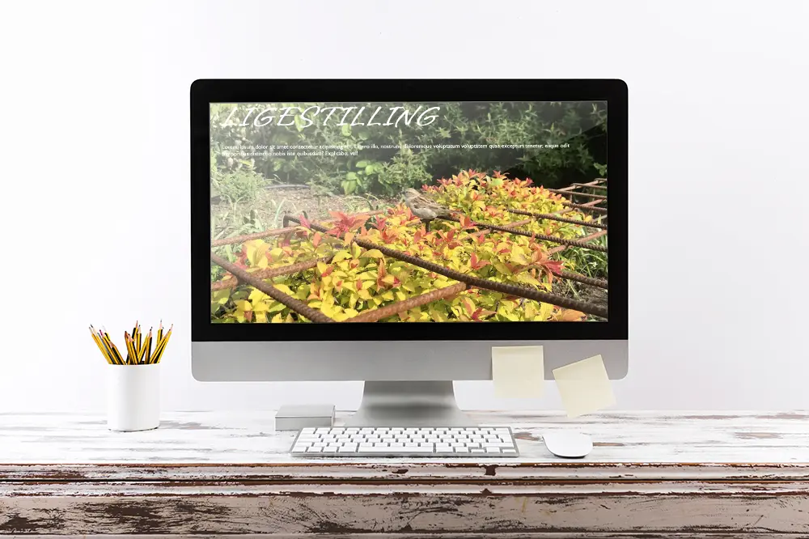
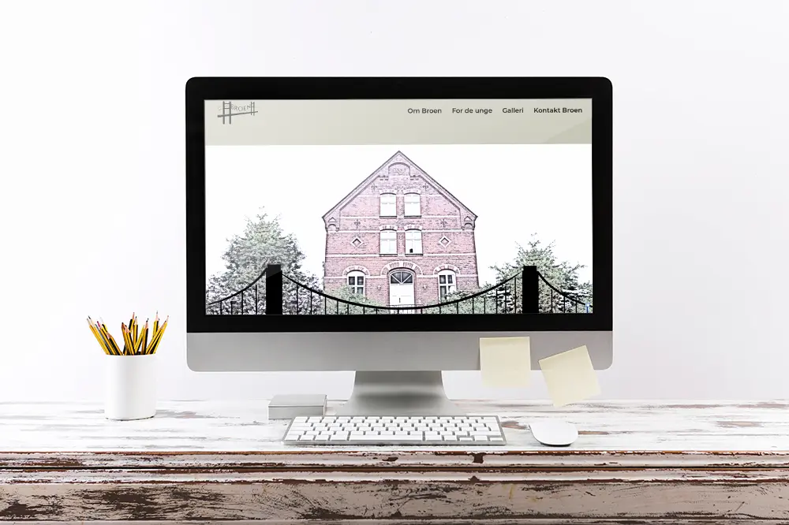

I opgaven Pilotsite, skulle vi i grupper af 2, ud og filme et interview med en person med en passion. Derefter skulle filmen klippes ned til 1 minut, ligesom en 1-minut-wonder.
For at gøre dette, fik vi undervisning i, hvordan man laver interview spørgsmål og i Adobe Premiere pro og fik nogen klip, så vi kunne øve os. Dette var rigtig brugbart, da det gjorde, at
vi følte os forberedt på, hvordan vi skulle interviewe og filme.
Se mit Pilotsite her:

I opgaven Redesign og temadokumentation, skulle vi lave et redesign af en nuværende hjemmeside og lave en eller flere videoer, som max varede 3 minutter.
Vi fik bl.a. undervisning i, hvordan man laver mikrocopyen "formular" i HTML og styler den i CSS. Formularen var bl.a. en af de opgaver jeg fik i vores gruppe, da jeg skulle lave vores
kontakt-side.
Desuden hjalp jeg med at kode nogen af de andre sider. Det var rigtig god øvelse at kode endnu en hjemmeside fra bunden, men denne gang med mere viden om fx grid, som vi brugte rigtig
meget, og som har haft stor betydning nu, hvor jeg har lavet min portfolio.
Se vores redesign her:
